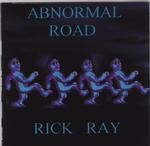

| Artist: | Rick Ray |
| Title: | Abnormal Road |
| Label: | Neurosis Records |
| Length(s): | 72 minutes |
| Year(s) of release: | 1999 |
| Month of review: | 07/2000 |
| 1) | Divided By Three | 4.21 |
| 2) | Your Short Life | 8.18 |
| 3) | American Streets | 4.57 |
| 4) | Ed (part 2) | 4.15 |
| 5) | A Fine Predicament | 3.20 |
| 6) | Ideas | 3.43 |
| 7) | There's A Riot Outside | 4.45 |
| 8) | Okay, Okay | 0.08 |
| 9) | Something A Little More Original | 5.44 |
| 10) | No Air To Breathe | 4.37 |
| 11) | Sea Of Tranquility | 4.25 |
| 12) | Frankenstyle | 3.09 |
| 13) | In The Real World | 4.23 |
| 14) | Bloppy Stuff (part 3) | 3.01 |
| 15) | Bomb Day | 7.36 |
| 16) | Incendiary Larry | 3.14 |
| 17) | 2.06 |